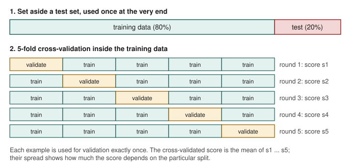
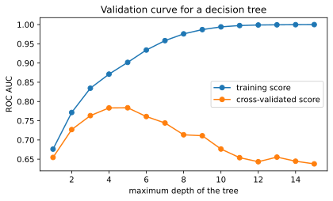
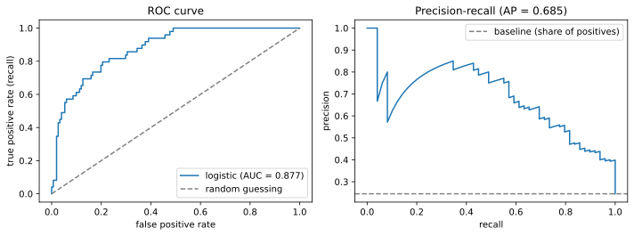

Chapter 10: Model Evaluation and Cross-Validation¶
Estimating honestly how well a model will do on data it has never seen
Learning outcomes
After this chapter you should be able to:
- explain why a model must be judged on data not used to build it, and what the test set is for;
- use training, validation and test sets correctly;
- estimate performance with k-fold cross-validation and report its mean and spread;
- tune hyperparameters with a grid search inside cross-validation;
- recognise and prevent data leakage, including leakage through preprocessing, time and groups;
- read a ROC curve and its AUC, and a precision–recall curve;
- compare models fairly and report results with their uncertainty.
A model is useful only if it works on cases it has not seen: next month's customers, tomorrow's transactions, the patient who walks in today. Its performance on the data it was trained on says little about that, because a flexible model can memorise its training data (Chapters 8 and 9). This chapter is about estimating generalisation performance honestly. It is the stage of the workflow where most of the self-deception in data science happens, usually by accident, and the habits it teaches matter more than any single algorithm.
import numpy as np
import pandas as pd
import matplotlib.pyplot as plt
from sklearn.model_selection import train_test_split, cross_val_score
from sklearn.pipeline import make_pipeline
from sklearn.preprocessing import StandardScaler
from sklearn.linear_model import LogisticRegression
from sklearn.neighbors import KNeighborsClassifier
from sklearn.tree import DecisionTreeClassifier
We reuse the churn data of Chapter 9, generated by the same code, wrapped in a function so that it can be called again:
def make_churn(n=1000, seed=10):
rng = np.random.default_rng(seed)
tenure = rng.integers(1, 72, n)
charge = rng.uniform(200, 1200, n).round(0)
calls = rng.poisson(1.5, n)
contract = rng.choice(["monthly", "yearly"], n, p=[0.55, 0.45])
logit = (-2.5 - 0.05 * tenure + 0.0025 * charge + 0.45 * calls
+ np.where(contract == "monthly", 1.0, -0.8))
churn = (rng.random(n) < 1 / (1 + np.exp(-logit))).astype(int)
X = pd.DataFrame({"tenure": tenure, "charge": charge, "calls": calls,
"monthly": (contract == "monthly").astype(int)})
return X, pd.Series(churn, name="churn")
X, y = make_churn()
X_train, X_test, y_train, y_test = train_test_split(X, y, test_size=0.2, random_state=1, stratify=y)
print(X_train.shape, X_test.shape, round(y.mean(), 3))
(800, 4) (200, 4) 0.244
10.1 Three roles for data¶
Data in a modelling project plays three distinct roles.
- The training set is used to fit the model's parameters (coefficients, tree splits).
- The validation set is used to make choices: which model, which features, which hyperparameters (\(k\) in k-NN, depth of a tree, \(\alpha\) in ridge).
- The test set is used once, at the end, to estimate how the final chosen model will perform on new data.
Why not make the choices on the test set? Because every choice made by looking at a dataset adapts the model to that dataset. Try twenty models and keep the one with the best test score, and that score is the maximum of twenty noisy numbers, which is optimistic. The test set must be kept out of every decision so that its score remains an honest estimate. Think of it as an exam paper: if you have seen the questions while studying, your mark no longer measures what you know.
Key idea
Any data used to make a decision about the model, even just to choose between two options, is no longer a fair test. Hold the test set back until all decisions are made, and look at it once.
A single validation set is wasteful when data is limited, and its score is noisy: it depends on which examples happened to land in it. Cross-validation solves both problems.
10.2 k-fold cross-validation¶
In k-fold cross-validation the training data is divided into \(k\) equal parts, called folds. The model is trained \(k\) times, each time on \(k - 1\) folds, and scored on the remaining fold. Every example is used for validation exactly once, and the \(k\) scores are averaged (Figure 10.1). Five or ten folds are the usual choices.

logreg = make_pipeline(StandardScaler(), LogisticRegression())
scores = cross_val_score(logreg, X_train, y_train, cv=5, scoring="accuracy")
print(scores.round(3))
print(f"mean {scores.mean():.3f}, sd {scores.std():.3f}")
[0.819 0.856 0.825 0.819 0.831]
mean 0.830, sd 0.014
The five scores differ by several percentage points, which shows how much a single split could have misled us. Report both the mean and the spread. For classification, scikit-learn's cv=5 uses stratified folds, each with the same proportion of each class as the whole, which keeps the folds comparable when one class is rare.
The scoring argument chooses the metric: "accuracy", "f1", "precision", "recall", "roc_auc" for classifiers; "r2", "neg_mean_absolute_error", "neg_root_mean_squared_error" for regressors (negated so that larger is always better). cross_validate computes several at once:
from sklearn.model_selection import cross_validate
res = cross_validate(logreg, X_train, y_train, cv=5, scoring=["accuracy", "f1", "roc_auc"])
print(pd.DataFrame(res).drop(columns=["fit_time", "score_time"]).agg(["mean", "std"]).round(3))
test_accuracy test_f1 test_roc_auc
mean 0.830 0.600 0.859
std 0.016 0.055 0.019
Comparing models¶
Cross-validation puts several candidate models on the same footing. Using the same folds for each (by passing the same cv object) makes the comparison fairer still.
from sklearn.model_selection import StratifiedKFold
from sklearn.ensemble import RandomForestClassifier
from sklearn.dummy import DummyClassifier
cv = StratifiedKFold(n_splits=5, shuffle=True, random_state=0)
candidates = {
"baseline": DummyClassifier(strategy="most_frequent"),
"logistic": make_pipeline(StandardScaler(), LogisticRegression()),
"k-NN (k=25)": make_pipeline(StandardScaler(), KNeighborsClassifier(25)),
"tree (depth 3)": DecisionTreeClassifier(max_depth=3, random_state=0),
"forest": RandomForestClassifier(n_estimators=200, min_samples_leaf=5, random_state=0),
}
for name, model in candidates.items():
s = cross_val_score(model, X_train, y_train, cv=cv, scoring="roc_auc")
print(f"{name:>15}: AUC {s.mean():.3f} +/- {s.std():.3f}")
baseline: AUC 0.500 +/- 0.000
logistic: AUC 0.854 +/- 0.004
k-NN (k=25): AUC 0.839 +/- 0.007
tree (depth 3): AUC 0.763 +/- 0.019
forest: AUC 0.828 +/- 0.019
The AUC (Section 10.5) of the baseline is exactly 0.5: it ranks every customer the same. Logistic regression comes out on top here, which is no surprise since the data was generated by a logistic rule; on real data the ranking could be different, which is exactly why we compare. The gaps between the top three are only one to three hundredths of AUC, comparable to the fold-to-fold spread of the forest, so we should not read too much into their exact order. The shallow tree is clearly behind.
10.3 Tuning hyperparameters¶
Hyperparameters are settings chosen before training: \(k\) for k-NN, the depth of a tree, the penalty \(C\) of logistic regression. The standard way to choose them is to try a grid of values and keep the one with the best cross-validated score. GridSearchCV does exactly this, and then refits the best setting on the whole training set.
from sklearn.model_selection import GridSearchCV
knn = make_pipeline(StandardScaler(), KNeighborsClassifier())
grid = GridSearchCV(knn, param_grid={"kneighborsclassifier__n_neighbors": [1, 3, 5, 9, 15, 25, 41, 61, 91]},
cv=cv, scoring="roc_auc")
grid.fit(X_train, y_train)
print("best k:", grid.best_params_, "CV AUC", round(grid.best_score_, 3))
results = pd.DataFrame(grid.cv_results_)[["param_kneighborsclassifier__n_neighbors", "mean_test_score", "std_test_score"]]
print(results.round(3).to_string(index=False))
best k: {'kneighborsclassifier__n_neighbors': 25} CV AUC 0.839
param_kneighborsclassifier__n_neighbors mean_test_score std_test_score
1 0.669 0.039
3 0.751 0.020
5 0.793 0.013
9 0.810 0.021
15 0.823 0.011
25 0.839 0.007
41 0.836 0.016
61 0.832 0.019
91 0.834 0.024
Parameters of a step inside a pipeline are named step__parameter, with two underscores; make_pipeline names each step after its class in lower case.
A plot of the score against the hyperparameter, a validation curve, shows the trade-off between underfitting and overfitting. Here it is for the depth of a decision tree, with the training score for comparison:
from sklearn.model_selection import validation_curve
depths = np.arange(1, 16)
train_sc, val_sc = validation_curve(DecisionTreeClassifier(random_state=0), X_train, y_train,
param_name="max_depth", param_range=depths, cv=cv, scoring="roc_auc")
fig, ax = plt.subplots(figsize=(6.5, 3.5))
ax.plot(depths, train_sc.mean(axis=1), marker="o", label="training score")
ax.plot(depths, val_sc.mean(axis=1), marker="o", label="cross-validated score")
ax.set_xlabel("maximum depth of the tree")
ax.set_ylabel("ROC AUC")
ax.set_title("Validation curve for a decision tree")
ax.legend()
fig.savefig("validation-curve.svg")
print("best depth:", depths[val_sc.mean(axis=1).argmax()])
best depth: 5

On the left both scores are low: shallow trees underfit. On the right the training score keeps climbing while the validation score falls: deep trees overfit. The best depth lies where the validation score peaks.
Note: the best CV score is itself optimistic
The winning setting of a grid search was selected because its cross-validated score was highest, so that score is slightly optimistic, for the same reason as choosing on the test set. With a held-out test set this does not matter: the final test score is unbiased. When the data is too small for a test set, nested cross-validation (an outer cross-validation loop around the whole grid search) gives an honest estimate.
10.4 Data leakage¶
Data leakage means that information which would not be available at prediction time finds its way into training or evaluation. It produces models that look excellent in evaluation and fail in use. It takes several forms.
Leakage through preprocessing¶
Any step that learns from data (a scaler's means, an imputer's medians, a choice of features) must learn from the training folds only. Done on the whole dataset before splitting, it lets the validation data influence training. With a mild step like scaling the effect is small; with feature selection it can be dramatic. Here is a stark demonstration on pure noise: 100 examples, 5,000 random features, and random labels, so that no model can truly do better than 50%.
from sklearn.feature_selection import SelectKBest, f_classif
rng = np.random.default_rng(0)
X_noise = rng.normal(size=(100, 5000))
y_noise = rng.integers(0, 2, 100)
# WRONG: choose the 20 "best" features using all the data, then cross-validate
selected = SelectKBest(f_classif, k=20).fit(X_noise, y_noise).get_support()
wrong = cross_val_score(LogisticRegression(), X_noise[:, selected], y_noise, cv=5)
# RIGHT: feature selection inside the pipeline, refitted within each training fold
right = cross_val_score(make_pipeline(SelectKBest(f_classif, k=20), LogisticRegression()),
X_noise, y_noise, cv=5)
print(f"selection outside CV: accuracy {wrong.mean():.2f}")
print(f"selection inside CV: accuracy {right.mean():.2f}")
selection outside CV: accuracy 0.85
selection inside CV: accuracy 0.48
Selecting features on all the data finds the 20 noise features that happen to line up with the labels including the validation examples, so cross-validation then reports an accuracy far above chance on data with no signal at all. Inside the pipeline, the selection is made on each training fold alone and the accuracy falls back to about 50%, the truth.
Caution: put every learned step inside the pipeline
Scaling, imputing missing values, encoding categories, selecting features, reducing dimensions: if a step learns anything from the data, put it in a Pipeline with the model and cross-validate the whole pipeline. Then each fold repeats the full procedure on its own training data, exactly as will happen when the model is used.
Target leakage¶
A feature can leak the answer. In a churn model, a column "cancellation_reason" is filled in only for customers who have already left; in a model to predict hospital readmission, "number of days in hospital this year" may include the readmission itself. Such features predict superbly in historical data and are useless, or impossible to obtain, at prediction time. The defence is to ask of every feature: would I know this value at the moment I need to make the prediction?
Leakage through time and groups¶
When data has an order in time, random splits let the model train on the future and predict the past. A forecast must be evaluated on periods that come after its training data; scikit-learn's TimeSeriesSplit makes folds that respect order (Chapter 12).
When several rows belong to the same unit (several visits by one patient, several photos of one person, several readings from one machine), a random split puts rows of the same unit in both training and validation, and the model is rewarded for recognising the unit rather than for generalising to new ones. GroupKFold keeps all rows of a group in the same fold.
from sklearn.model_selection import GroupKFold
patients = np.repeat(np.arange(10), 3) # 10 patients, 3 visits each
gkf = GroupKFold(n_splits=5)
for i, (tr, va) in enumerate(gkf.split(np.zeros(30), groups=patients)):
print(f"fold {i}: validation patients {sorted(set(patients[va].tolist()))}")
fold 0: validation patients [4, 9]
fold 1: validation patients [3, 8]
fold 2: validation patients [2, 7]
fold 3: validation patients [1, 6]
fold 4: validation patients [0, 5]
10.5 ROC curves, AUC and precision–recall curves¶
Chapter 9 showed that moving the classification threshold trades precision against recall. Two curves show the whole trade-off at once, for every threshold.
The ROC curve (receiver operating characteristic) plots the true positive rate (recall, \(TP/(TP+FN)\)) against the false positive rate (\(FP/(FP+TN)\)) as the threshold moves from 1 down to 0. A model that ranks perfectly goes straight up to the top-left corner; a model that guesses at random follows the diagonal. The area under the curve (AUC) summarises it in one number: 1 is perfect, 0.5 is random. AUC has a useful interpretation: it is the probability that the model gives a randomly chosen positive example a higher score than a randomly chosen negative one.
The precision–recall curve plots precision against recall over all thresholds. It is more informative than the ROC curve when the positive class is rare, because the false positive rate can look tiny even when false positives far outnumber true positives.
from sklearn.metrics import roc_curve, roc_auc_score, precision_recall_curve, average_precision_score
final = make_pipeline(StandardScaler(), LogisticRegression()).fit(X_train, y_train)
scores_test = final.predict_proba(X_test)[:, 1]
fpr, tpr, _ = roc_curve(y_test, scores_test)
prec, rec, _ = precision_recall_curve(y_test, scores_test)
fig, axes = plt.subplots(1, 2, figsize=(10, 3.8))
axes[0].plot(fpr, tpr, label=f"logistic (AUC = {roc_auc_score(y_test, scores_test):.3f})")
axes[0].plot([0, 1], [0, 1], linestyle="--", color="gray", label="random guessing")
axes[0].set_xlabel("false positive rate")
axes[0].set_ylabel("true positive rate (recall)")
axes[0].set_title("ROC curve")
axes[0].legend(loc="lower right")
axes[1].plot(rec, prec)
axes[1].axhline(y_test.mean(), linestyle="--", color="gray", label="baseline (share of positives)")
axes[1].set_xlabel("recall")
axes[1].set_ylabel("precision")
axes[1].set_title(f"Precision-recall (AP = {average_precision_score(y_test, scores_test):.3f})")
axes[1].legend(loc="upper right")
fig.tight_layout()
fig.savefig("roc-pr.svg")
print("test AUC:", round(roc_auc_score(y_test, scores_test), 3))
test AUC: 0.877

The test AUC (0.877) is close to the cross-validated estimate of Section 10.2 (0.854); a gap of this size is normal sampling variation for a test set of 200, and agreement of this kind is what to expect when the test set has been kept clean. The average precision (AP) summarises the precision–recall curve; its baseline is the share of positives, not 0.5.
10.6 Reporting results¶
A good evaluation report says:
- What was predicted, and for whom: the target, the population, the period.
- How the data was split: random, by time, by group; the sizes; whether the test set was used only once.
- The metric and why it suits the problem: accuracy, F1, AUC, MAE, and the costs of the different errors.
- The baseline's score, so the reader can judge the gain.
- Cross-validated scores with their spread, and the final test score.
- Limitations: groups the model does worse for, conditions under which it was not tested, assumptions about the future resembling the past.
Here is the final step for the churn model, carried out once:
from sklearn.metrics import accuracy_score, f1_score
base = DummyClassifier(strategy="most_frequent").fit(X_train, y_train)
pred = final.predict(X_test)
print(f"test accuracy: model {accuracy_score(y_test, pred):.3f}, baseline {accuracy_score(y_test, base.predict(X_test)):.3f}")
print(f"test F1 (churn class): {f1_score(y_test, pred):.3f}")
print(f"test AUC: {roc_auc_score(y_test, scores_test):.3f}")
test accuracy: model 0.840, baseline 0.755
test F1 (churn class): 0.610
test AUC: 0.877
Caution: the test score is an estimate too
With 200 test examples, an accuracy of 0.84 has a standard error of about \(\sqrt{0.84 \times 0.16 / 200} \approx 0.026\), so differences of a couple of percentage points between models are within the noise. Report results with sensible precision (two or three digits), not as if the fourth decimal meant something.
10.7 Summary¶
Summary
- Judge models on data not used to build them. Training data fits parameters, validation data (or cross-validation) makes choices, and the test set is used once at the end.
- k-fold cross-validation trains \(k\) times, each time validating on a different fold; report the mean and spread of the scores. Classification uses stratified folds.
- Compare candidate models with the same folds, and always include a baseline.
- Tune hyperparameters with
GridSearchCV; a validation curve shows underfitting and overfitting. The best CV score is slightly optimistic; the test set or nested CV corrects that. - Leakage makes evaluations falsely optimistic: fit every learned preprocessing step inside a pipeline; drop features unavailable at prediction time; split by time for forecasts and by group when rows share a unit.
- The ROC curve plots true against false positive rate over all thresholds; AUC is the probability that a random positive outranks a random negative. Precision–recall curves suit rare positive classes.
- Report the target, the split, the metric, the baseline, CV spread, the test score and the limitations.
10.8 Exercises¶
Exercise 1
A student tunes \(k\) for k-NN by trying 30 values and picking the one with the best score on the test set, then reports that score. What is wrong, and how should it be done?
Answer
The test set has been used to make a choice, so the reported score is the best of 30 noisy estimates and is optimistic. The value of \(k\) should be chosen by cross-validation (or a separate validation set) within the training data, for example with GridSearchCV; the chosen model is then scored once on the untouched test set.
Exercise 2
With 1,000 training examples and 10-fold cross-validation, how many examples is each model trained on, and how many models are fitted in total? How many are fitted by a grid search over 6 values with 5-fold CV (including the final refit)?
Answer
Each of the 10 models is trained on 900 examples and validated on 100. The grid search fits \(6 \times 5 = 30\) models in cross-validation, plus one final refit of the best setting on all the training data: 31 fits.
Exercise 3
Cross-validate a decision tree of depth 4 and a random forest on the churn training data with the folds cv, using F1 as the metric. Which is better, and is the difference larger than the fold-to-fold spread?
Answer
for name, m in [("tree", DecisionTreeClassifier(max_depth=4, random_state=0)),
("forest", RandomForestClassifier(n_estimators=200, min_samples_leaf=5, random_state=0))]:
s = cross_val_score(m, X_train, y_train, cv=cv, scoring="f1")
print(f"{name}: F1 {s.mean():.3f} +/- {s.std():.3f}")
tree: F1 0.567 +/- 0.049
forest: F1 0.536 +/- 0.077
Compare the means with the standard deviations: when the gap between the means is smaller than the spread across folds, the evidence that one is better is weak.
Exercise 4
A model to predict whether a loan will default includes the feature "number of missed payments on this loan". The model's AUC is 0.99. Why should you be suspicious?
Answer
Missed payments on the loan are only known after the loan has been running for a while, and they are part of what default means; at the moment of deciding whether to grant the loan, the value would be zero or unknown. This is target leakage: the feature carries information about the outcome that is not available at prediction time, and it explains the implausibly high AUC.
Exercise 5
A classifier's AUC is 0.80. Explain what this means in terms of pairs of examples.
Answer
If you pick one positive example and one negative example at random, the model gives the positive one a higher predicted score 80% of the time. (Ties count as half.)
Exercise 6
A dataset has 5 X-ray images from each of 200 patients. Why is ordinary k-fold cross-validation inappropriate, and what should be used instead?
Answer
Ordinary k-fold puts images of the same patient in both training and validation folds, so the model can score well by recognising patient-specific features rather than the condition, overestimating its performance on new patients. Use GroupKFold with the patient as the group, so that all images of a patient fall in the same fold.
10.9 Quiz¶
Check your understanding of Chapter 10
Exercise 1
The test set should be used
- to choose hyperparameters
- to choose between models
- once at the end to estimate performance
- as extra training data
Answer
once at the end to estimate performance
Exercise 2
In 5-fold cross-validation, each example is used for validation
- never
- exactly once
- five times
- four times
Answer
exactly once
Exercise 3
What AUC does a model that guesses at random have?
- 0
- 0.25
- 0.5
- 1
Answer
0.5
Exercise 4
Selecting features on the whole dataset before cross-validation is an example of
- regularisation
- data leakage
- stratification
- underfitting
Answer
data leakage
Exercise 5
Which splitter keeps all rows of the same patient in one fold?
- KFold
- StratifiedKFold
- GroupKFold
- TimeSeriesSplit
Answer
GroupKFold
Exercise 6
On a validation curve, a large gap between a high training score and a low validation score indicates
- underfitting
- overfitting
- leakage
- a good model
Answer
overfitting
Exercise 7
Which scikit-learn class searches a grid of hyperparameters with cross-validation?
Answer
GridSearchCV